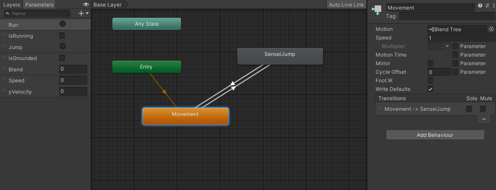
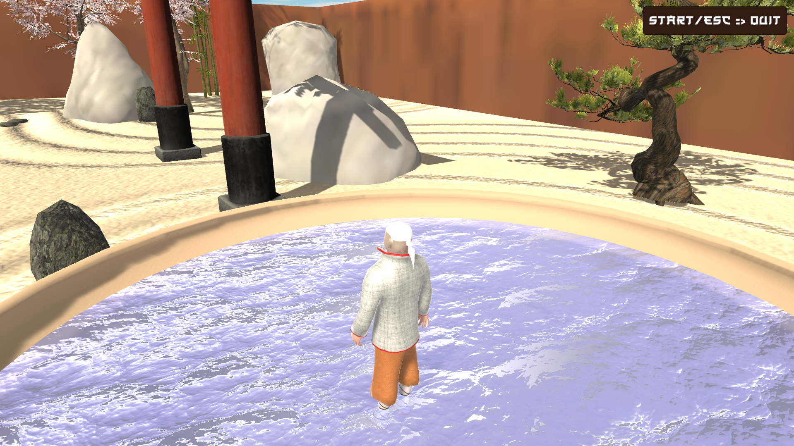
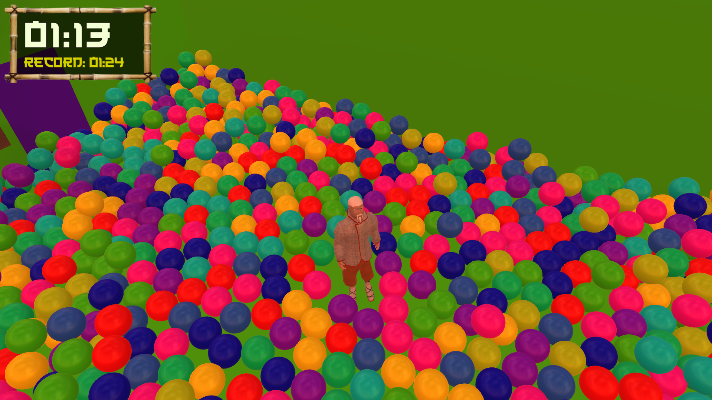
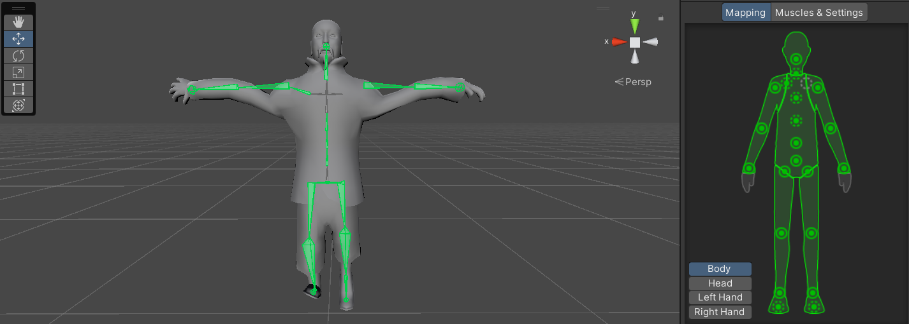
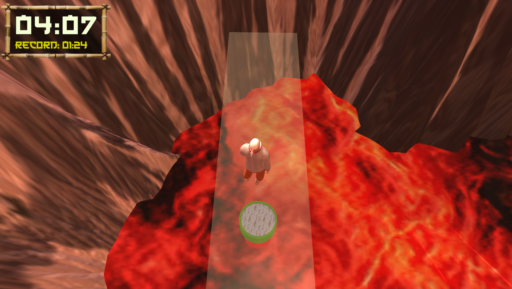

Unity • 3D Platformer
Pyrokour Dojo
Inspired by the Japanese game show, MXC with a deadly twist, conquer a 3D obstacle course over a lake of boiling lava! The course features 7 obstacles to beat, which you must do in as fast of a time as you can! This game can be played with a keyboard or a gamepad.

About the Project
Pyrokour Dojo is a Japanese-themed 3D Obby that takes place over a lake of hot boiling lava! Inspired by the early 2000's Japanese game show "MXC", make your way through seven challenging obstacles to complete the course in the fastest time possible!
Team: Dylan Abry (Lead Designer and Developer), Nihal Pinto (Developer), Srushti Basapuri (UI Design, Artist), Krisha Jhala (Documentation)
Gameplay & Media
"Pyrokour Dojo" Gameplay
Footage of Sensei navigating the deadly 3D obstacle course! Huyah!!

Sensei Animation Blend Tree
Animation blend tree that was used to ensure smooth transitions between Sensei animator states as the player controlled him.

Starting Zen Garden
Before the player enters the dangerous obstacle course, they begin the game in a peaceful zen garden where they can explore the area and become familiar with the controls.

Ball Pit
Each time the course scene was loaded, a loop instantiated the ball objects in the ball pit, each assigned a random material from an array of colors. For better performance, material grouping was used to pool objects together with the same material instead of randomly assigning each new object a material from the array.

Sensei T-Skeleton
The 3D model for Sensei was downloaded off of Sketchfab. Due to the absence of a right collarbone in the skeleton, the animations had to be manually completed by myself in the Unity Editor.

High Dive!
The last part of finishing the course is facing your fears and conquering the dreaded high dive. Landing in the pool will trigger the win panel that will report the player's time to them.
What I Built
- Gamepad Controller Input Configuration: Configured gamepad controls for the player's 3D movement and gameplay actions, allowing the platforming mechanics to be played using a controller. Input handling was integrated with the character's movement and animation systems so player actions remain synchronized across gameplay and visual states.
- 3D Character Animation with Blend Tree State Management: Developed an animation state system that connects the player's movement to a 3D character Animator. Blend Trees transition between movement animations based on player input and movement state, allowing the character's animations to respond smoothly as the player navigates the platforming environment.
- Ball Pit Object Generation System: Programmed the ball pit to instantiate a large collection of physics-enabled GameObjects while assigning materials across the generated objects to create visual variation. The system allowed a large environmental feature to be populated programmatically rather than requiring every individual ball to be manually placed.
- Timed and Alternating Obstacle Systems: Developed multiple obstacles around repeating, time-dependent behaviors. Wall-mounted pushers repeatedly extend and retract to knock the player from platforms, while another obstacle sequence alternates enabled and disabled cones in synchronization with an audio ticking beat. Timing and state changes are coordinated so that players can recognize each obstacle's pattern and time their movement accordingly.
- Player Checkpoint System: Implemented checkpoints throughout the platforming course that update the player's active respawn position as they progress. When the player falls or reaches a failure state, the system returns them to their most recently activated checkpoint rather than restarting the entire course, and also will add 10 seconds to their time as a penalty. The player activates a checkpoint simply by colliding with any part of the checkpoint platform.
- Memory and Rendering Optimization: Optimized the project by reducing unnecessarily high-resolution textures, managing repeated objects and materials more efficiently, and reducing the memory and rendering cost of the environment. Texture resolution was reduced from 4K to 1K where the additional detail provided little visible benefit, contributing to a reduction in the project's build size from approximately 2.8 GB to roughly 100 MB while preserving the intended visual presentation.
Technical Challenges
- Smooth Animation State Transitions with Blend Trees: Connecting player movement to character animation required more than simply switching between individual animation clips. I configured Unity Animator parameters and Blend Trees to translate movement input into animation states, allowing the character to transition smoothly between different locomotion behaviors. Tuning transition conditions and blend values helped prevent abrupt animation changes while keeping the character's visual state synchronized with player movement.
- Memory Management via Asset & Texture Optimization: The project's original assets created an unnecessarily large memory and storage footprint, particularly through high-resolution textures whose full resolution was not visually necessary during gameplay. I profiled the project's asset usage through analyzing Unity build reports and reduced textures from resolutions as high as 4K to 1K where appropriate. This significantly reduced their memory requirements while preserving acceptable visual quality. Combined with additional asset cleanup and optimization, these changes reduced the packaged project from approximately 2.8 GB to roughly 100 MB.
- Implementing a Ball Pit that Avoids Performance Drop: Creating a convincing ball pit required a large number of simultaneously visible and physics-enabled GameObjects, making a straightforward implementation expensive for both rendering and physics simulation. Instead of manually constructing the pit, I used scripted object instantiation and organized the balls through controlled material groupings. I balanced the number of active objects and their visual variety against the cost of rendering and simulating many individual objects, allowing the ball pit to remain interactive without creating an excessive performance drop.
- Cone Obstacle Fairness Assurance: The alternating cone obstacle needed to remain challenging without producing patterns that felt unpredictable or impossible to react to. I implemented the obstacle as a timed state sequence in which groups of cones alternate between active and inactive states. These state changes were synchronized with an audio ticking cue, giving the player readable feedback about when the obstacle would change. Coordinating gameplay state with consistent timing and audio feedback allowed the obstacle to create difficulty through player reaction and pattern recognition rather than arbitrary failure. In addition, instead of completely setting cone objects active/inactive, I reassigned them to a translucent material and disabled their colliders when the corresponding colored cones were in the inactive state.
- Keyboard/Gamepad Playability: Supporting both keyboard and gamepad controls required the same movement and gameplay systems to respond consistently to different forms of input. I mapped equivalent player actions across both control methods and connected them to the same underlying movement and animation logic rather than creating separate gameplay implementations. This allowed players to switch input methods while preserving consistent movement behavior, animation responses, and gameplay functionality.